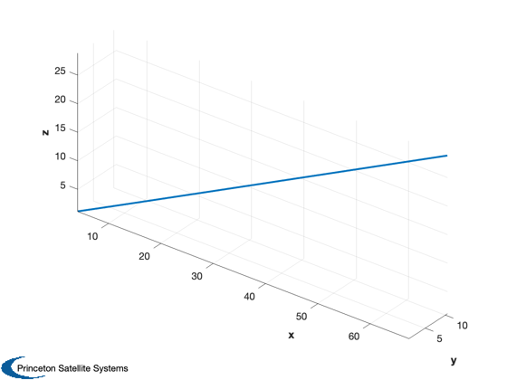
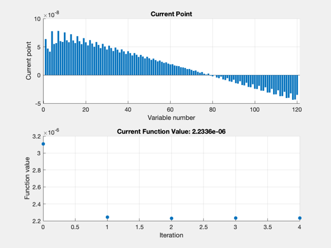
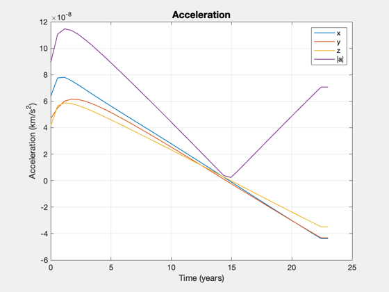
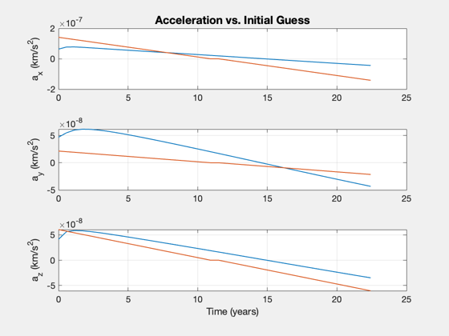
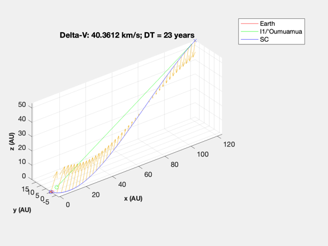
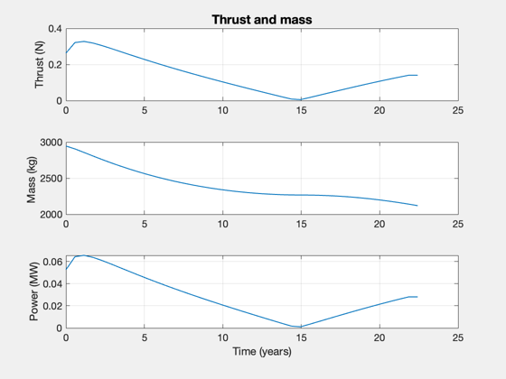

Set up and run the trajectory optimization for an asteroid intercept.
I1/'Oumuamua is a recent interstellar asteroid that passed through the solar system. This shows that a fusion powered spacecraft could have intercepted the asteroid. This demo requires the optimization toolbox.
Simulation is in the gravity field of the sun. THe demo also sizes a spacecraft to perform the mission given the engine parameters and payload.
See also: TrajectoryBetweenTwoPlanets, SpacecraftFromAccel
Contents
%-------------------------------------------------------------------------- % Copyright (c) 2018 Princeton Satellite Systems, Inc. % All rights reserved. %-------------------------------------------------------------------------- % Since 2018.1 % 2019.1 Update units of sigma to W/kg from kW/kg %--------------------------------------------------------------------------
I1/'Oumuamua orbit
jD = 2462576.5;% A.D. 2030-Mar-16 00:00:00.0000 TDB rA = [ 1.008272975334536E+10; 1.579428200546252E+09; 4.311503526924462E+09]; vA = [ 2.428440175149515E+01; 3.623455975379303E+00; 1.063812980138126E+01]; mu = Constant('mu sun'); el0 = RV2El(rA,vA,mu); [r,v] = RVOrbGen(el0,linspace(0,-12*365*86400,200),[],mu); au = Constant('au'); Plot3D(r/au) % Assume we could launch closer to when asteroid was detected (2018) el = RV2El(r(:,end),v(:,end),mu); jD0 = jD - 12*365;
Compute an optimal trajectory (fmincon)
years = 23; % 50, 20 planet1 = 3; planet2 = struct; planet2.name = 'I1/''Oumuamua'; planet2.el = el; nSteps = 40; clear InterpolateState jDStart = FindDepartureDate( jD0, planet1, planet2, years ); s = TrajectoryBetweenTwoPlanets( jDStart, planet1, planet2, years, nSteps );
First-order Norm of
Iter F-count f(x) Feasibility optimality step
0 241 3.107932e-06 8.207e+09 4.522e-07
1 482 2.244017e-06 2.517e+08 3.468e+04 3.734e-07
2 723 2.231092e-06 1.385e+07 2.844e+03 3.920e-08
3 964 2.233585e-06 3.432e+05 1.306e+02 2.808e-09
4 1205 2.233600e-06 1.750e+04 1.144e+01 6.521e-11
Optimization stopped because the relative changes in all elements of x are
less than options.StepTolerance = 1.000000e-10, but the relative maximum constraint
violation, 2.132211e-06, exceeds options.ConstraintTolerance = 1.000000e-06.
Consider enabling the interior point method feasibility mode.
Nonoptimal solution, flag: -2
iterations: 4
funcCount: 1205
constrviolation: 17500
stepsize: 6.521e-11
algorithm: 'interior-point'
firstorderopt: 11.441
cgiterations: 0
message: 'Converged to an infeasible point.↵↵fmincon stopped because the size of the current step is less than↵the value of the step size tolerance but constraints are not↵satisfied to within the value of the constraint tolerance.↵↵<stopping criteria details>↵↵Optimization stopped because the relative changes in all elements of x are↵less than options.StepTolerance = 1.000000e-10, but the relative maximum constraint↵violation, 2.132211e-06, exceeds options.ConstraintTolerance = 1.000000e-06.'
bestfeasible: []
Final Equality Constraints (km, km/s)
-2046.3
-17500
7208.2
1.8872e-06
-2.7098e-05
1.4219e-05
    Size the spacecraft
This will compute the power required to move the requested payload given the acceleration profile returned from the optimization. Not all combinations of parameters will converge.
sC = SpacecraftFromAccel; sC.uE = 120; % exhaust velocity, km/s sC.sigma = 1e3; % specific power, W/kg sC.fS = 0.04; % fuel structural fraction sC.eff = 0.3; % efficiency to jet thrust power sC.mP = 2000; % payload mass, kg SpacecraftFromAccel(sC,s); %-------------------------------------- % $Id: f3e717ec99412ed845a96bdb6fab28568f2937e2 $
Total mission DV: 40.5 km/s Max thrust power: 0.066 MW Total mass: 2945.5 kg Payload mass: 2000 kg Engine mass: 66 kg Fuel mass: 844 kg Structural mass: 34 kg Payload Fraction: 0.678995